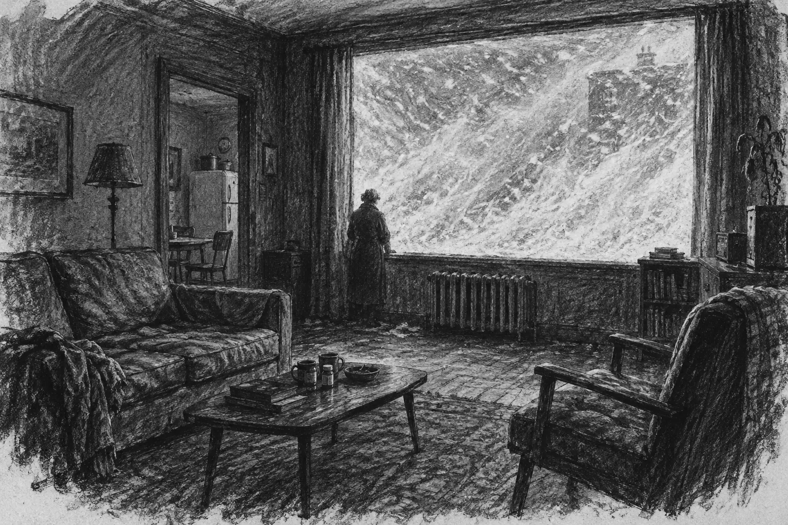
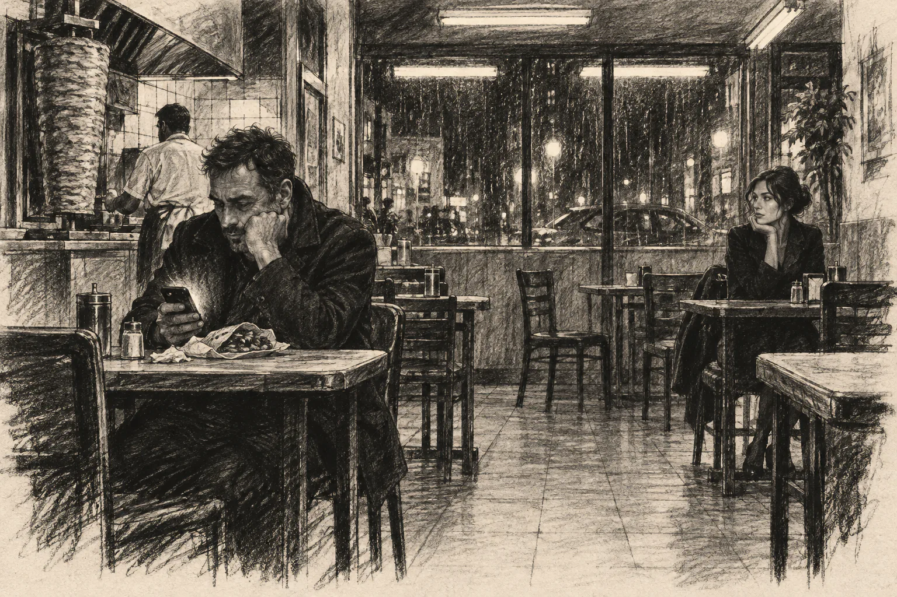
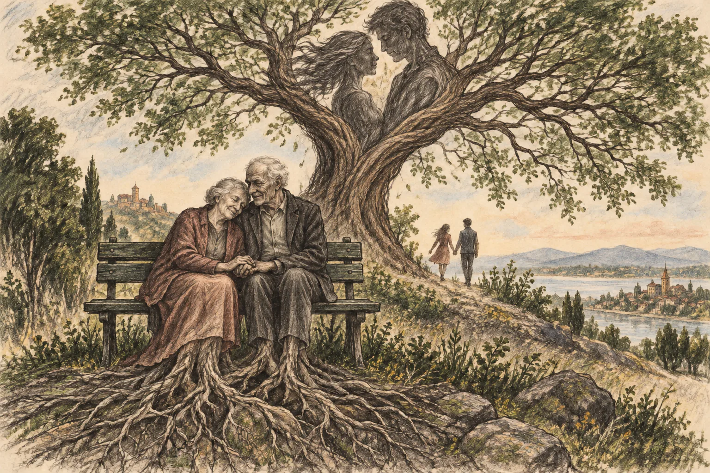
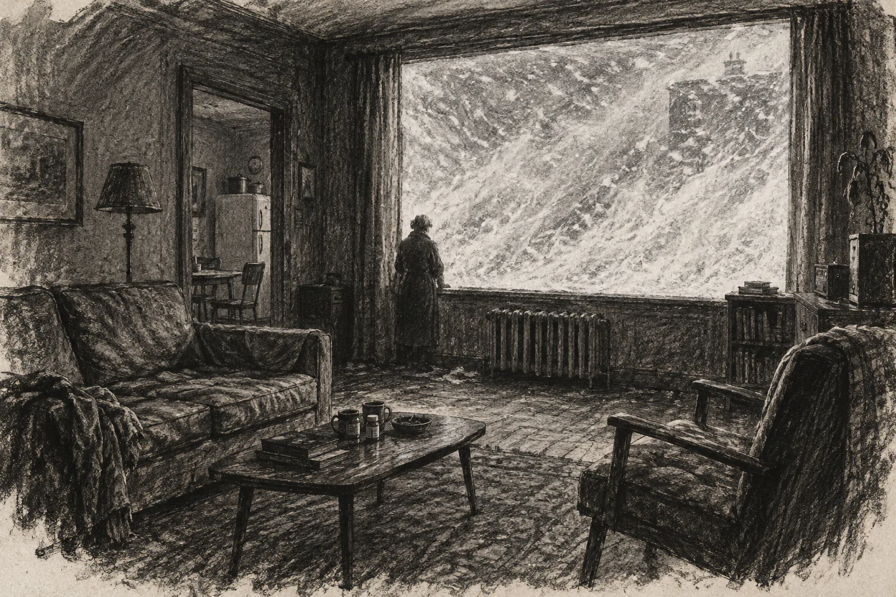

A story in four movements
Friday.
Undefined gray days under an undefined gray sky.

Friday
Undefined gray days under an undefined gray sky. It was supposed to be summer, yet an endless November wrapped us all in its wet embrace.

I pick up my phone and fire up ChatGPT while chewing my kebab. For a second I have the sensation that she will lift her eyes in my direction, so I quickly bow mine.
From my armchair I look through the window. The night came, dark. The heavy rain turned into a drizzle, long and cold.
Since I was a small child I told myself stories to fall asleep. In the beginning I was prince charming fighting with the dragon. A few years later the idea of a princess started popping in. Then it all became about the princess.
I catch her lowering her eyes while a secret smile blushes briefly on her cheeks
Saturday
She is thin and delicate in her movements, contrasting sharply with the rest of the crowd. I wake up late with a headache. I hold my pillow in my arms like a dear lover. Her image still lingers in my mind. The warmth of the sheets is soothing. Her warmth.
On the kitchen table, my pills. I don’t need to hide them anywhere or keep them in order.
I stop for a second and look around my apartment, decorated in 50s fashion, with a pink couch and worn out lamps, large windows and a washing machine.
I am watching from behind the window pane people stopping at the fast food, then going to clubs and bars, dressed in their fancy clothes, men and women, dancing the dance of dating and social connection.
My burst of silent rage cleared the sky and now a bright sun and a blue sky sit above us, in stark contrast to just a few hours earlier.
Despite the sparsity of our interaction, the gentle recognition, the smile, the nod have a pleasant familiarity and it brightens my day.
I spend the rest of my day wandering the city from terrace to terrace. I like watching people. I like the green and the sun.
I could choose to call someone But what if they don’t answer?
Next to me on the bench, an old couple. They approached me earlier and asked if I minded if they sat. They were holding hands. I watch them out of the corner of my eye, how they are just sitting there, not saying a word, her head resting on his shoulder.
I imagine them sitting like this forever, gaining roots, eternal, keeping each other company across countless seasons. Connection is atemporal, a moment frozen in time while the time passes.
You don’t grow old, you grow roots and transcend - a tree hugging another tree, with new lovers holding hands and exchanging their first kisses under your eternal shadow.

I think all true lovers eventually become trees - this is why there are so many of them in our parks.
They were all once sitting on benches, her head leaning on his shoulder. Then they grew roots. Time passed, the benches were worn by the elements and disappeared. But the lovers remained.
It’s full dark and the park alleys are empty. The trees first turned to shadows, then became indistinguishable from the surrounding blackness.
A sudden, absurd, accidental death would fit me properly. Coming from nowhere and going to nowhere. Disappeared, forgotten, nothing - the resting argument of my life. I wish I had more time though.
For a brief second I hope I bump into a neighbour but that second passes.
Not before long I fall asleep with an empty mind and my phone on my chest.
Sunday

I wake up to the sound of the blizzard. I look through the window and I see snow covering almost all of the glass.
A sense of old and stale - the couch, the dust, the wine glasses, my pyjamas, my flip-flops.
I asked her if I could join her. She said yes and looked at me with an inquisitive and slightly amused look.
My mind wanders back to the witty woman in my beer-hall fantasy.
We talk, our eyes locked, as if it's only me and her and nothing else matters.
A shiver. It’s so cold, and the air is damp.
I lie in bed, eyes riveted towards the ceiling. I have nothing left to get me moving to the next day.
Alone, with no one to see me, with no one calling, I vanish.
Later
Soon November will come but until then lovers are busy making their promises.
The real estate agent opens the door and welcomes a family: a mother, a father and a child.
He smiles with a warm smile. He feels at home.